My work sits at the intersection of psychiatry, sociology, and genetics.
Publications
Filter:
Collaborations
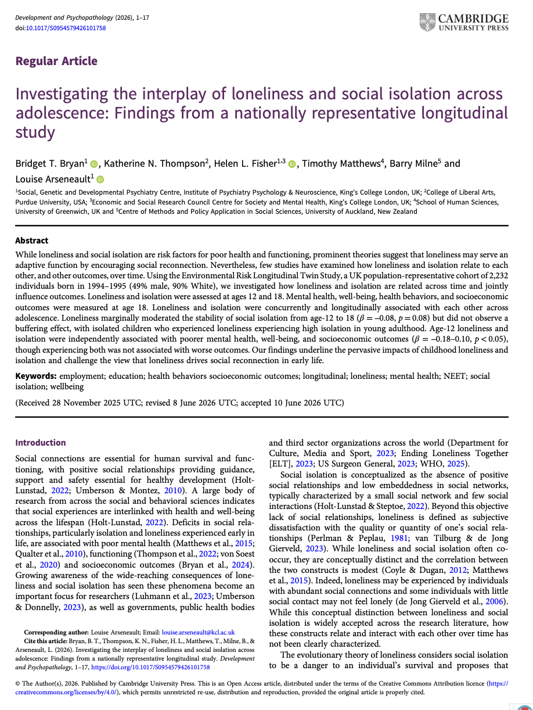
Bryan, B. et al. (2026)Development and Psychopathology
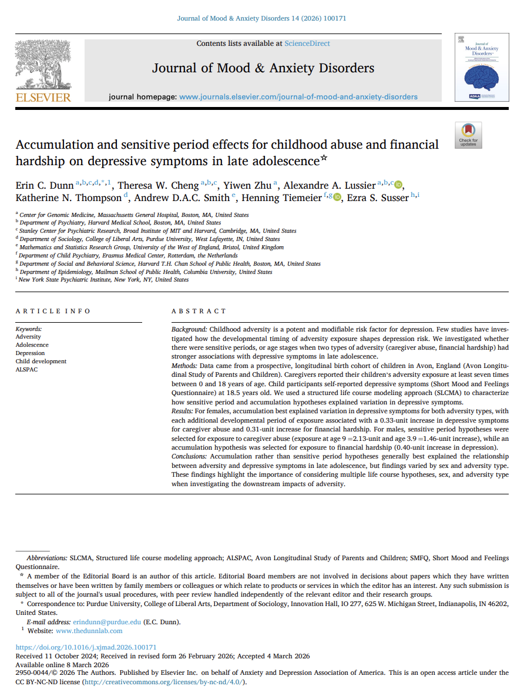
Dunn, E. C. et al. (2026)Journal of Mood and Anxiety Disorders
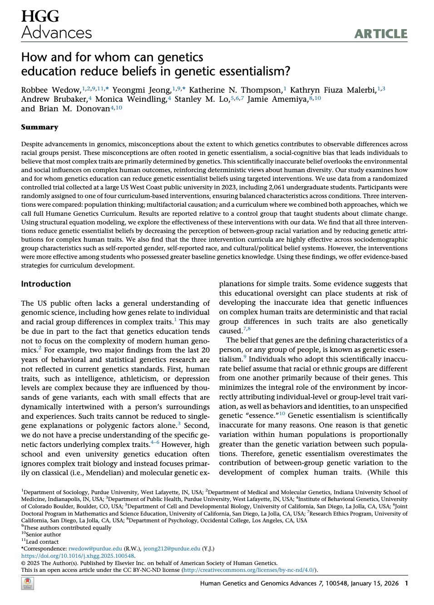
Wedow, R. et al. (2026)Human Genetics and Genomics Advances
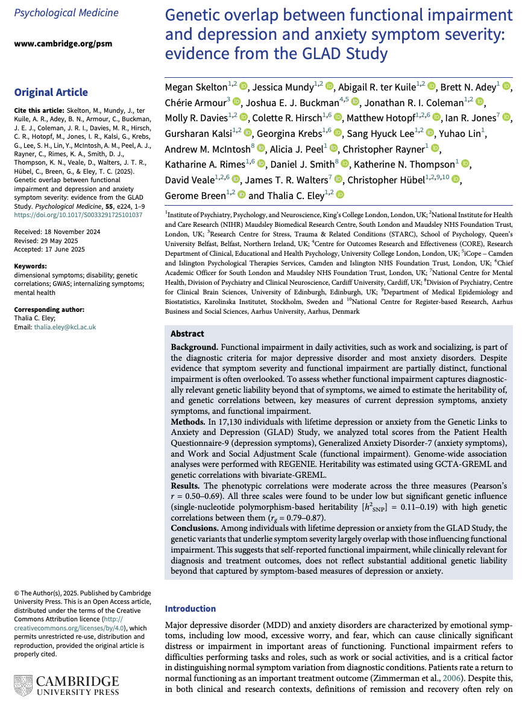
Skelton, M. et al. (2025)Psychological Medicine
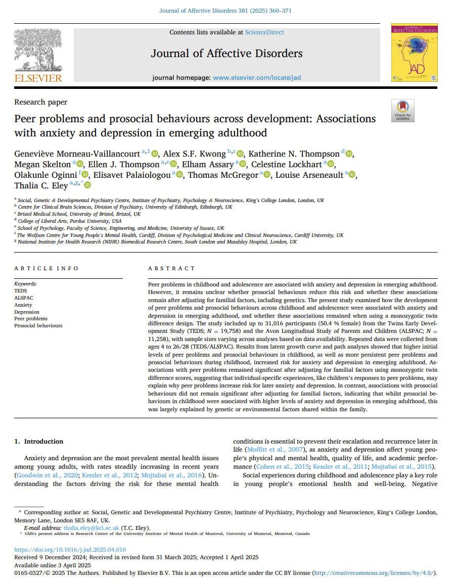
Morneau-Vaillancourt, G. et al. (2025)Journal of Affective Disorders
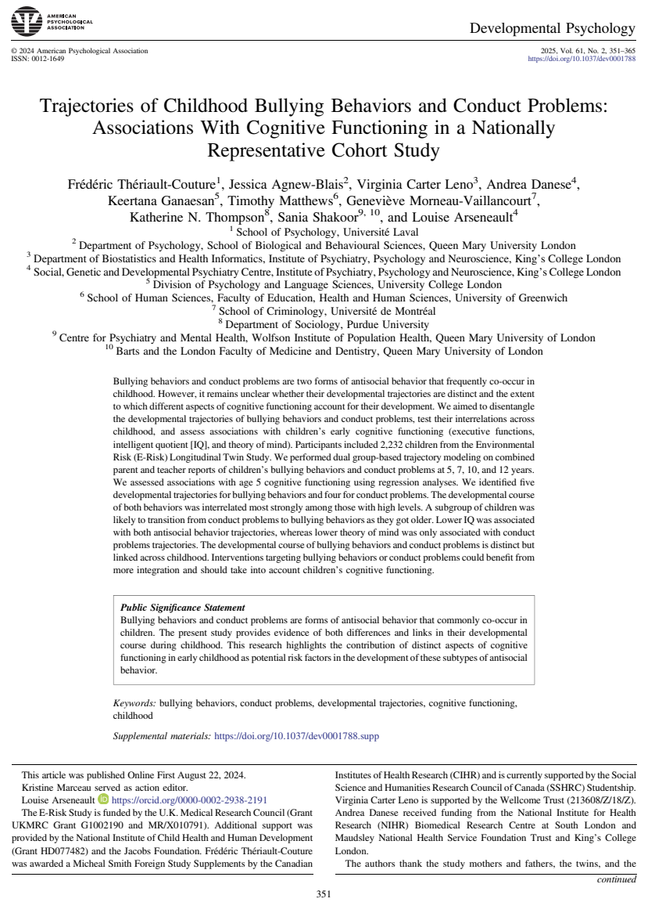
Thériault-Couture, F. et al. (2024)Developmental Psychology
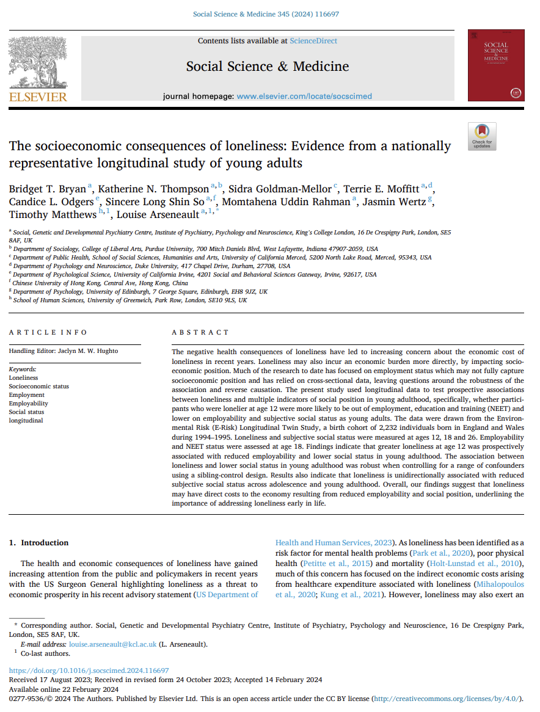
Bryan, B. T. et al. (2024)Social Science & Medicine
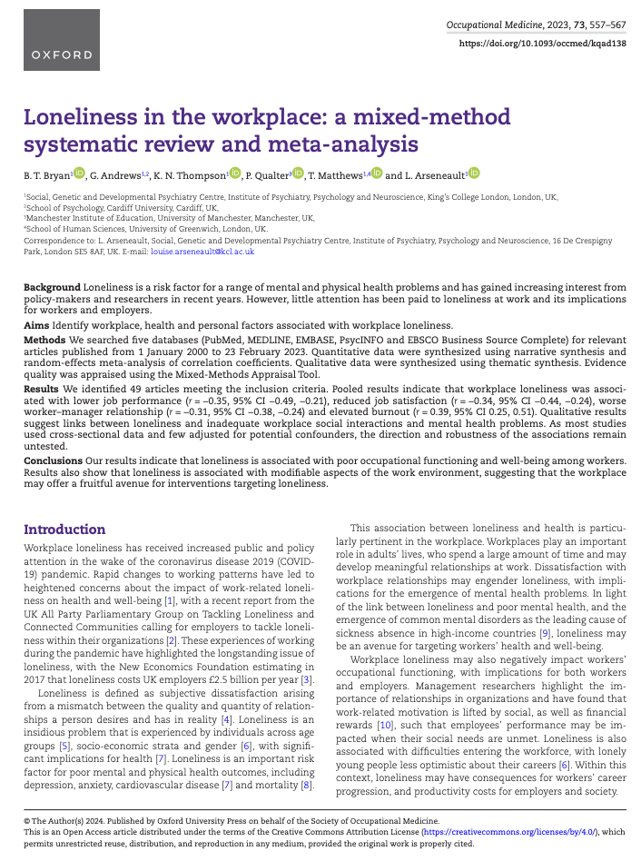
Bryan, B. T. et al. (2023)Occupational Medicine
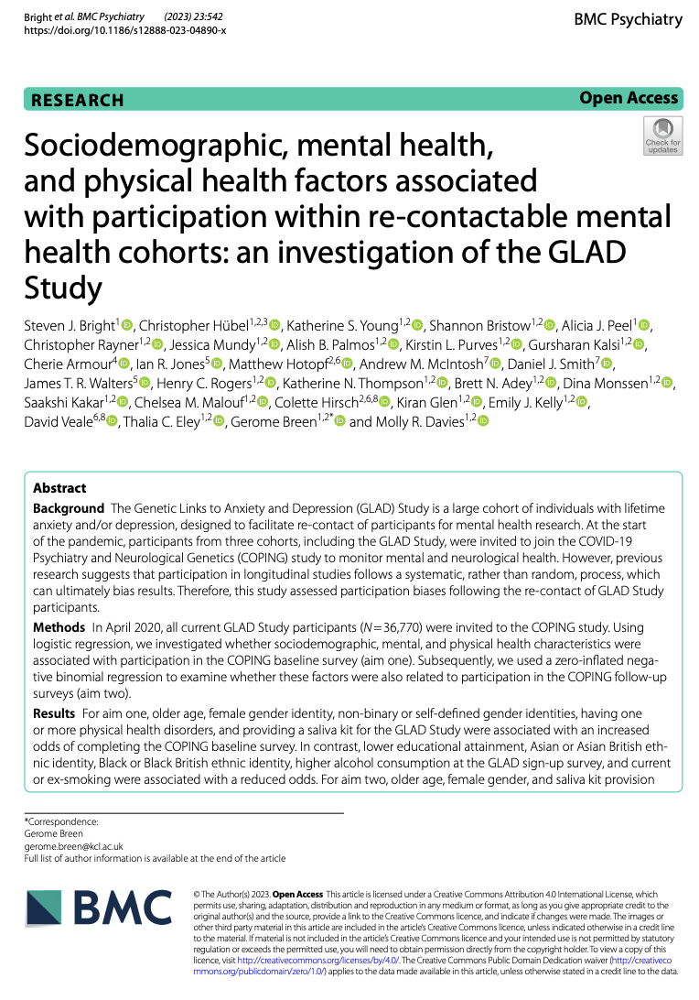
Bright, S. J. et al. (2023)BMC Psychiatry
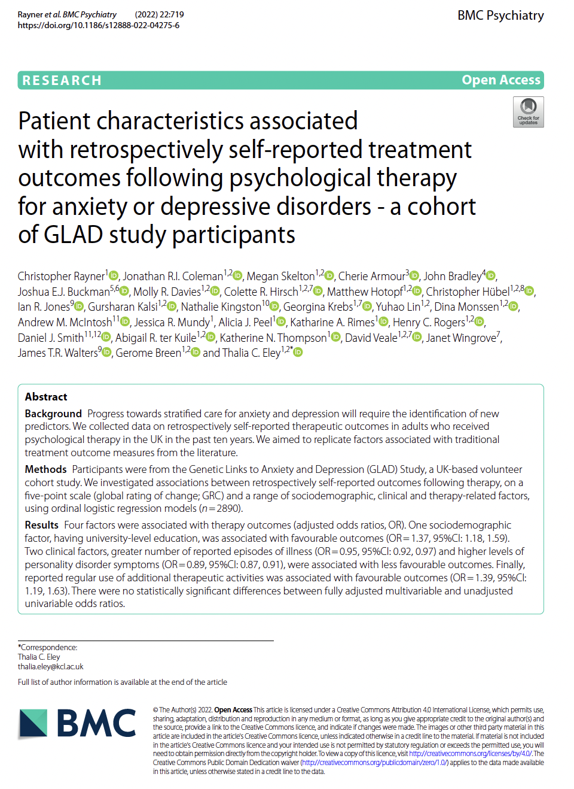
Rayner, C. et al. (2022)BMC Psychiatry
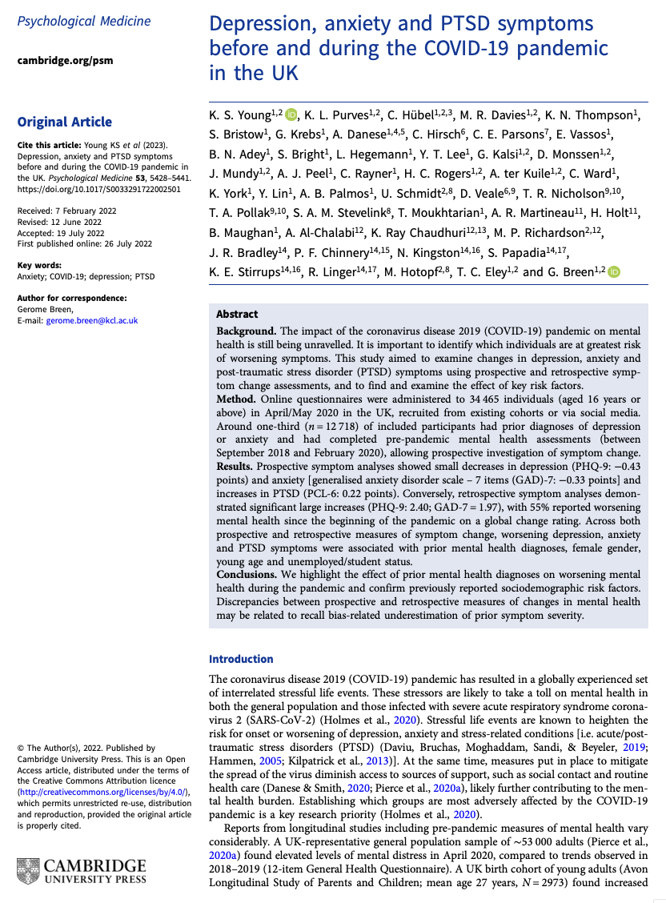
Young, K. S. et al. (2022)Psychological Medicine
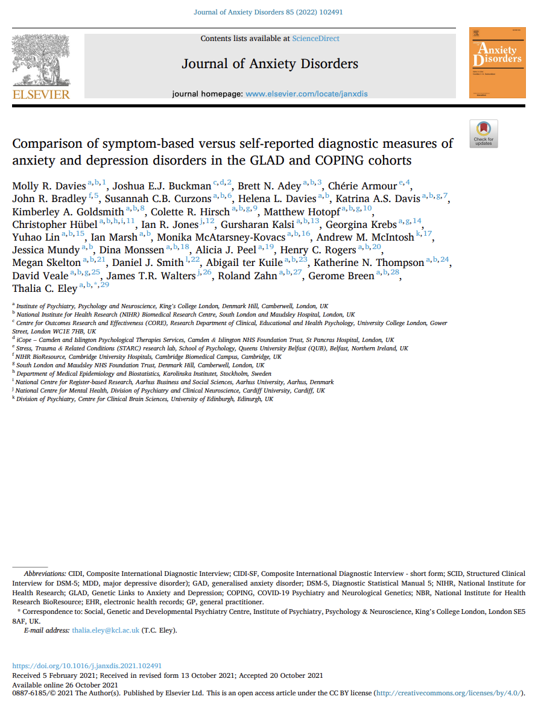
Davies, M. R. et al. (2021)Journal of Anxiety Disorders
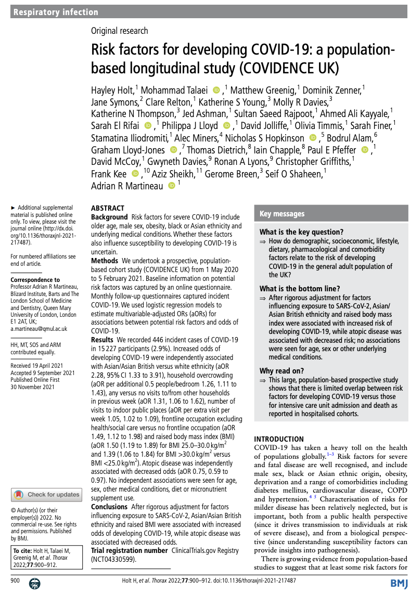
Holt, H. et al. (2021)Thorax
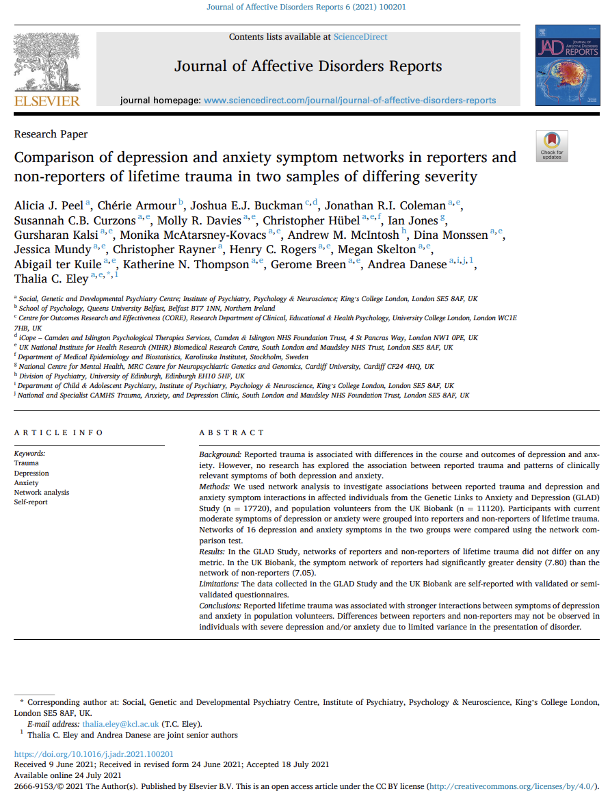
Peel, A. J. et al. (2021)Journal of Affective Disorders Reports